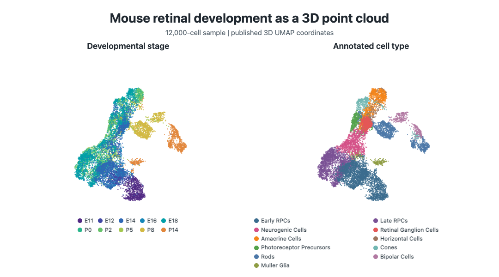
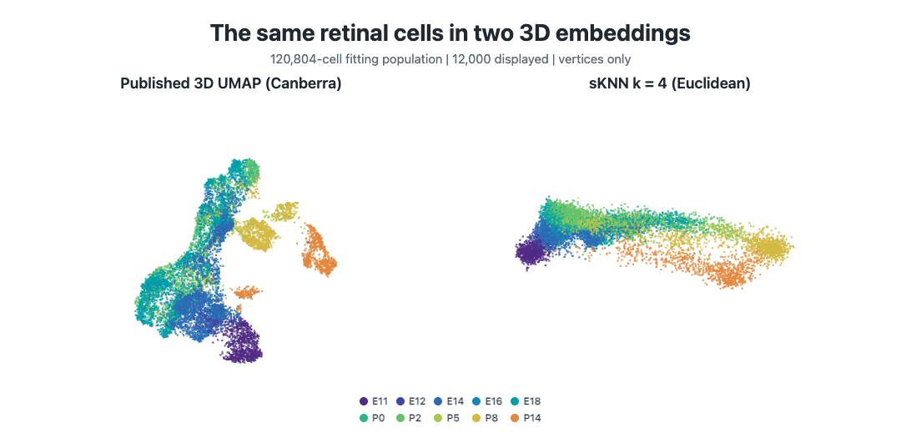
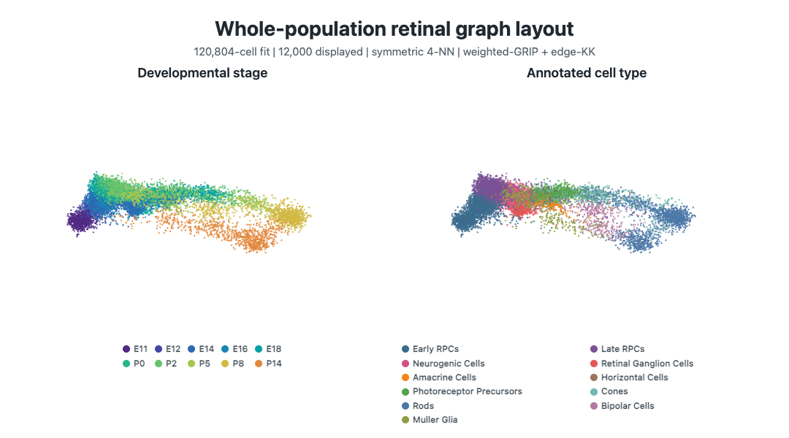

This case study shows the same 12,000 mouse retinal-development cells in two three-dimensional representations. The first is a published UMAP point cloud. The second is a symmetric k-nearest-neighbor graph with an independently computed graph layout. Both embeddings are fitted on 120,804 cells before extracting the same 12,000 cells for display. UMAP uses Canberra distance; the symmetric-kNN graph uses Euclidean distance. Holding cell identities, annotations, colors, and initial camera settings fixed makes the representational change visible without implying that the two geometries are equivalent.
ivue renders both views. It does not compute UMAP
coordinates, construct the graph, or optimize the graph layout.
The README also shows a PHATE embedding fitted to the same full-population 20-PC matrix, using Euclidean distance and 2,000 spectral landmarks before extracting these display cells. This vignette develops the two views included in the bundled data; PHATE coordinates and Python dependencies are not bundled.
For a task index, see Finding your way around ivue; for small reproducible inputs, see Example data and recipes.
The installed package includes a visualization-ready object. It contains two coordinate matrices, a weighted edge table, categorical annotations, and provenance. It contains no expression matrix, principal-component matrix, barcodes, sample identifiers, or local source paths.
path <- system.file("extdata", "retinal-development.rds", package = "ivue")
if (!nzchar(path)) {
candidates <- c(
file.path("inst", "extdata", "retinal-development.rds"),
file.path("..", "inst", "extdata", "retinal-development.rds")
)
path <- candidates[file.exists(candidates)][1]
}
retina <- readRDS(path)
dim(retina$coordinates$umap)
#> [1] 12000 3
dim(retina$coordinates$sknn)
#> [1] 12000 3
nrow(retina$graph$edges)
#> [1] 4108Rows have synthetic identifiers that agree across both coordinate matrices, the graph, and the annotation table.
ids <- retina$annotations$id
stopifnot(
identical(rownames(retina$coordinates$umap), ids),
identical(rownames(retina$coordinates$sknn), ids),
identical(retina$graph$vertices, ids)
)
table(retina$annotations$age)
#>
#> E11 E12 E14 E16 E18 P0 P2 P5 P8 P14
#> 849 196 2578 623 2222 1053 1728 727 1151 873The source is the retained mouse retinal-development single-cell
RNA-seq data from Clark et
al. (2019), available as GEO
GSE118614. The published analysis fitted 20 principal components to
log10(CPT + 1) values for 3,290 high-variance genes in
120,804 cells, then retained 107,052 retinal cells. Its
three-dimensional UMAP used Canberra distance.
The case-study sample contains 12,000 retained cells selected reproducibly across nonempty developmental-stage-by-cell-type strata, with a minimum of 20 cells per stratum and seed 20190619. Both views use those exact identities in the same order.
The published coordinates and annotations are publicly available, but
the source review found no separate dataset license. The upstream use
agreement states a prepublication consent restriction tied to
January 1, 2019. Public availability and the elapsed date do not
establish public-domain status or a new permission grant. The package’s
GPL code license does not establish rights in third-party values. See
the installed extdata/README.md and
retina$provenance$source.terms for the documented review
and limitations.
The UMAP coordinates are taken from the published metadata and
centered only for display. No UMAP fitting or graph construction occurs
in this vignette. plot3D.groups() associates annotation
values with coordinate rows.
umap.by.age <- plot3D.groups(
retina$coordinates$umap,
groups = retina$annotations$age,
scale = age.scale,
point.size = 2.2,
alpha = 0.78,
axes = FALSE,
aspect = "equal",
camera = camera, controls = FALSE
)
umap.by.age
Before drawing graph topology, render the symmetric-kNN layout coordinates with the same point function used for UMAP. This isolates the change in geometry from the visual effect of an edge overlay.
sknn.points.by.age <- plot3D.groups(
retina$coordinates$sknn,
groups = retina$annotations$age,
scale = age.scale,
point.size = 2.2,
alpha = 0.78,
axes = FALSE,
aspect = "equal",
camera = camera, controls = FALSE
)
sknn.points.by.age
The code holds cell identities, stage colors, point styling, projection, and initial camera fixed. The static poster additionally uses the independent rigid orientations described below. The two widgets created by the code rotate independently; synchronized capture is a separate README production step.
For the graph view, dgraphs constructed Euclidean
symmetric kNN graphs from the same 20-PC representation used upstream of
UMAP, using all 120,804 cells. The connected k = 4
reference was selected after reviewing a response series
(k = 3, 4, 6, 8, 12, 16, 29) and three layout seeds at
k = 3 and k = 4. grip fitted
weighted-GRIP followed by edge-KK refinement to the full graph with
374,597 edges, before extracting the displayed cells. Connectivity alone
does not establish geometric fidelity.
The bundled edge table contains only original edges whose endpoints both occur in the display sample. This induced subgraph can be disconnected even though the full fitting graph is connected. No layout is refitted on the induced graph.
prepare.graph() validates the bundled edge table without
loading rgl or recomputing a layout. The weights are
declared as distances, but visual edge width is chosen explicitly rather
than inferred from them.
graph <- prepare.graph(retina$graph)
nrow(graph$vertices)
#> [1] 12000
nrow(graph$edges)
#> [1] 4108
graph$weight.type
#> [1] "distance"graph.by.age <- plot3D.graph(
graph,
X = retina$coordinates$sknn,
groups = retina$annotations$age,
scale = age.scale,
point.size = 2.1,
alpha = 0.84,
edge.col = "#59687324",
edge.width = 1,
axes = FALSE,
aspect = "equal",
camera = camera, controls = FALSE
)
graph.by.ageThe README preview shows the extracted coordinates without edges; the code above adds the induced graph’s edge overlay.

The cell-type view reuses the coordinates, graph, camera, and
rendering settings. Only groups and scale
change.
umap.by.cell.type <- plot3D.groups(
retina$coordinates$umap,
groups = retina$annotations$cell.type,
scale = cell.scale,
point.size = 2.2,
alpha = 0.78,
axes = FALSE,
aspect = "equal",
camera = camera, controls = FALSE
)
graph.by.cell.type <- plot3D.graph(
graph,
X = retina$coordinates$sknn,
groups = retina$annotations$cell.type,
scale = cell.scale,
point.size = 2.1,
alpha = 0.84,
edge.col = "#59687324",
edge.width = 1,
axes = FALSE,
aspect = "equal",
camera = camera, controls = FALSE
)This separation is useful when comparing views: changing geometry should not silently change the sampled observations, annotation mapping, or palette.
The UMAP and graph-layout coordinates answer different visualization questions. UMAP displays a nonlinear embedding produced by its own neighbor and optimization choices. The graph layout displays one selected symmetric kNN topology and its weighted drawing objective. Apparent proximity in either view is not evidence that the other representation contains the same neighborhoods.
The README’s graph animation and the original two-panel comparison use the same bundled visualization values but are captured as synchronized 72-frame rotations, each lasting 14.4 seconds. Both comparison panels use the same point styling, orthographic projection, and camera angles at each frame. Before rotation, each embedding is independently oriented so that its P14 centroid faces the viewer. These are rigid display rotations, not refits or deformations of the coordinates.
In the source repository, make readme-retinal
reconstructs the upstream PC matrix and graph layout, renders the
point-cloud hero and UMAP comparison, verifies their WebGL canvases, and
encodes the GIFs. The graph animation, two-panel comparison, case-study
object, and vignette posters are regenerated with:
The README’s three-panel comparison adds the separately computed PHATE coordinates. The repository includes its PHATE fitting script and rendering script.
The stored provenance records source checksums, graph-selection diagnostics, layout information, and the versions of the packages that computed the graph and layout.
retina$provenance[c("citation", "sample", "umap")]
#> $citation
#> [1] "Clark et al. (2019), Neuron 102:1111-1126.e5; doi:10.1016/j.neuron.2019.04.010; GEO GSE118614"
#>
#> $sample
#> [1] "12,000 cells stratified by developmental stage and cell type; minimum 20 per nonempty stratum; seed 20190619"
#>
#> $umap
#> [1] "Published three-dimensional UMAP fitted on 120,804 cells, then subsetted to the matched display cells; Canberra distance"
retina$provenance$graph.input
#> $representation
#> [1] "first 20 PCs of log10(CPT + 1)"
#>
#> $genes
#> [1] 3290
#>
#> $distance
#> [1] "Euclidean"
#>
#> $cells
#> [1] 120804
#>
#> $retained.cells
#> [1] 107052
#>
#> $sampled.cells
#> [1] 12000
retina$provenance$graph.selection$selected
#> [1] 4
retina$provenance$fitting.graph
#> $vertices
#> [1] 120804
#>
#> $edges
#> [1] 374597
#>
#> $components
#> [1] 1
#>
#> $displayed.edges
#> [1] 4108
#>
#> $display.rule
#> [1] "induced subgraph; layout fitted before display subsampling"
retina$provenance$graph.layout$method
#> [1] "grip::edge.kk(init = 'weighted_grip')"